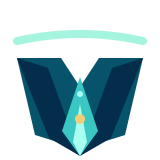
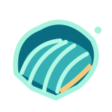
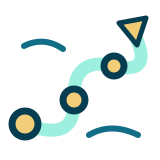
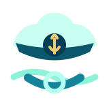
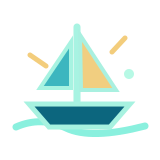
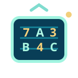
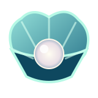

Estúdio de jogos · MARÉ
Palavras que movem marés.
Um universo de doze jogos para pensar, descobrir e ir um pouco mais fundo. Escolha seu próximo mergulho.
Escolha seu jogo
Doze experiências, infinitas descobertas.

Abismo
Uma palavra. Pistas nas profundezas.
Mergulhar ↗
Cardume
Quatro grupos. Tudo no mesmo barco.
Mergulhar ↗
Corrente
Siga a corrente das letras.
Mergulhar ↗
Concha
Sete letras. Uma concha de achados.
Mergulhar ↗
Trilha
Trace sua rota. Não perca o fio.
Mergulhar ↗
Enigma
Pistas cruzadas. Navegação precisa.
Mergulhar ↗
Marujo
Palavras à deriva. Encontre todas.
Mergulhar ↗
Náufrago
Descubra a palavra antes de seis erros.
Jogar ↗
Sinais
Decifre a frase pelo código numérico.
Jogar ↗
Pérola
Embaralhe as letras. Encontre a palavra.
Jogar ↗
Farol
Reconstrua frases e siga a pista.
Jogar ↗DE VOLTA AO CONVÉS
Bora navegar ↗De onde paramos?
Marinheiro de primeira viagem? Escolha um rumo.